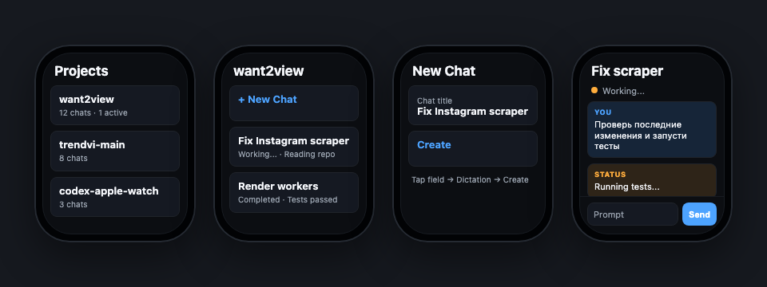

Run Codex tasks without opening your Mac.
Open projects, inspect existing chats, dictate prompts, create new threads, track working status, and read Codex responses from a watchOS interface built for quick decisions.

A wrist-sized flow for real Codex work.
The watch app focuses on the loop that matters in the field: find the right project, continue the right thread, send the next instruction, and know whether Codex is still working.
Limits, active status, and quick entry to projects.
Recent Codex workspaces without scanning the whole session archive.
Existing chats, previews, timestamps, and New Chat.
Native text input so watchOS dictation and keyboard behavior stay standard.
Live status updates and scrollable long technical replies.
The bridge keeps the watch simple.
Apple Watch talks to one compact API. The Mac bridge handles Codex Desktop, local history, auth, tunnel reliability, and normalized watch-friendly models.
No keys on watchOS
Secrets remain on the Mac/server side. The watch receives normalized data only.
Survives Terminal closing
Bridge and tunnel run as launch agents instead of fragile foreground commands.
Fast project loading
Uses app-server thread indexes and bounded recent-project views for watch UX.
npm run check
npm run service:install
npm run tunnel:install
# Xcode
# Open CodexAppleWatch.xcodeproj
# Set Team + Bundle ID
# Run CodexWatchApp on Apple WatchOpen-source and operator-ready.
MIT licensed, documented, and built around practical remote Codex operation rather than a fake demo chat.